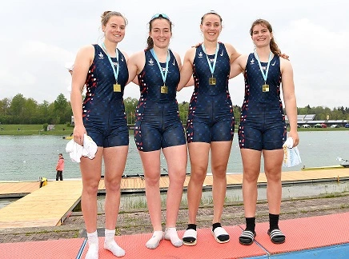

Which university is right for you?
Before you speak to teams, think about the practical issues that will influence whether or not a
particular university will be a choice for you? Below is a list of things you might take into
consideration.
Is there anything you would add to this list? What would be a deal-breaker for you?

Things to consider:
- Cost and Financial Aid
- Team Culture
Ask to be put in touch with team members.
- NCAA Ranking
Is it important to be on a top Divison 1 team?
- Academic Recognition and Standing
Will your qualifications be recognized in the UK?
- Academic Offer
Look at faculty, research facilities, internships and career services.
- Academic requirements
Beware that some universities don't accept a PE A level.
- Size of the campus
Consider whether you want to be on a large or small campus, live in a rural or urban
environment.
- Geography
Don't go to a cold state if you don't like indoor training! Consider proximity to
airports.
- Alumni networks and career services
Are there active alumni networks in the UK you can tap into?
How will you present yourself?
There are all sorts of ways to do this. You can prepare a document to use as an attachment or
create
a free website.
Whether or not you have a rowing CV, coaches will still ask you to fill out their own recruiting
form, but it's nice to have
something ready to send off at a moment's notice.

Here's what coaches want to know:
- Personal details
Including name, date of birth and contact informaton.
- Erg Scores
Include your 2000m score and any regularly tested pieces.
- Racing Results
Include status events like National Schools Regatta, the Scullery, Schools Head of the
River,
The Metropolitan Regatta, Henley Women's or Henley Royal.
Many US coaches will know these events well. Include any GB trialing experience.
- Physcial attributes
Include height, weight and arm span.
- Coach's contact details
Get permission first.
- School name and address
- Anticipated graduation date
- GSCE results and predicted grades
- Your GCSE and A level subjects
Beware that some universities don't recognize the PE A level.
- SAT or ACT results (See box below)
- Videos
You can upload video with private settings to YouTube.
What are ACTs & SATs?
US students don't take a test like the A Level. Instead, universities
require
students to take either the ACT or the SAT, which are standardized tests in reading comprehension,
grammar and maths.
You'll find links to advice on when and where to
take the test and how to prepare.
Recruitment guides
There is a lot of information and also agencies who sell services to help you
along. You don't need to invest into recruitment itself, as US coaches will keep you informed
of what they need from you and when. Here are links to give a broad overview of
US collegiate rowing and recruiting.